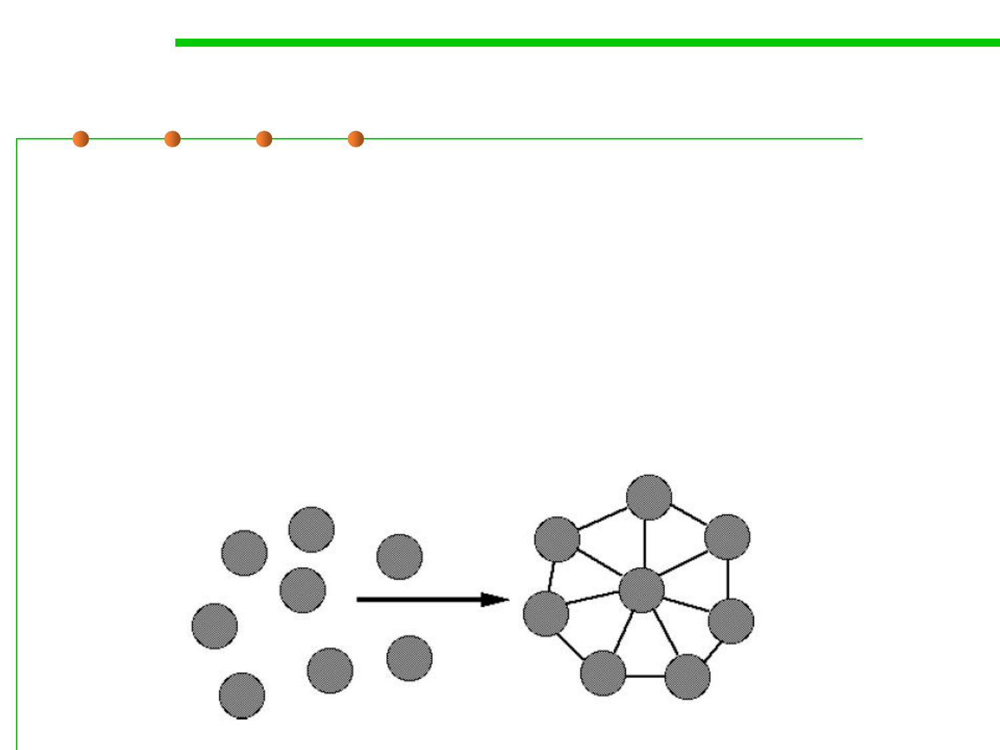

2. Composability
6.1 Metrics and Construction Principles for Maintainability
▪ Freely combine modules to produce new systems (可容易的将模块
组合起来形成新的系统)
– Goal: make modules reused in different environments (目标：使模块可在
不同的环境下复用)
– Example: Math libraries; UNIX command & pipes